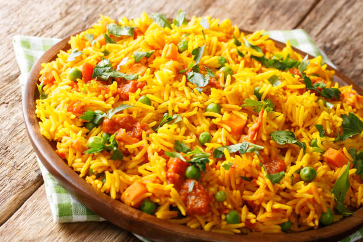

Home
Veg Pulao Recipes

Description:
Veg Pulao is a fragrant rice dish made with basmati rice, mixed
vegetables, and aromatic spices. It's a one-pot meal that's easy to
prepare and perfect for any occasion.
Ingredients
- 1 cup basmati rice
- 2 cups mixed vegetables (carrots, peas, beans)
- 1 onion, sliced
- 2 green chilies, slit
- 1 teaspoon ginger-garlic paste
- 2 tablespoons ghee or oil
- 1 teaspoon cumin seeds
- 2-3 cloves
- 1-2 cardamom pods
- 1 bay leaf
- Salt to taste
- Water as needed
- Fresh coriander leaves for garnish
Steps
-
Rinse the basmati rice under cold water until the water runs clear.
- Soak the rice in water for 30 minutes, then drain.
- In a pot, heat ghee or oil over medium heat.
-
Add cumin seeds, cloves, cardamom, and bay leaf. Sauté for a minute.
-
Add sliced onions and green chilies. Cook until onions are golden brown.
- Add ginger-garlic paste and sauté for another minute.
- Add mixed vegetables and sauté for 2-3 minutes.
- Add the soaked rice and stir gently to mix with the vegetables.
- Add water and salt. Bring to a boil, then reduce heat to low.
-
Cover and cook until the rice is fluffy and all the water is absorbed.
- Garnish with fresh coriander leaves before serving.
- Serve hot with raita or salad.
- Enjoy your delicious Veg Pulao!